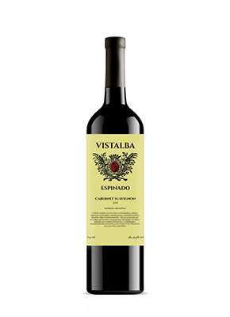
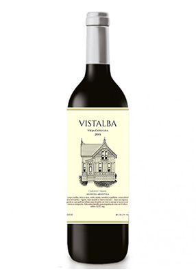
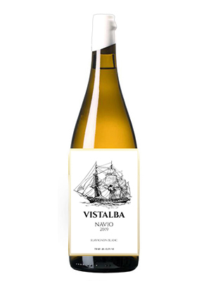
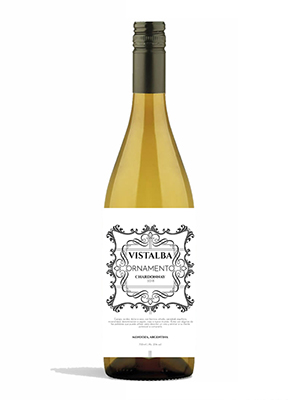

Nuestros Vinos

Cabernet Suavignon
Con 18 meses en paso en barricas de roble frances y roble americano, nuestro cabernet suavignon destaca por sus notas ahumadas

Cabernet Franc
Compuesto por un blend de terroir, nuestro cabernet franc, pasa 12 meses de cria en roblea americano, y 6 meses de guardado en tanque hasta su embotellado

Suavignon Blanc
Vino joven con 6 meses de cria en vasijas de barro y madera, el mismo despierta fragancias dulces que recuerdan a una primavera floral

Chardonnay
Vino de 12 meses de cria en guatambu, el mismo posee su acidez caracteristica, pero con un toque de maderas que recuerdan a nuestra patagonia